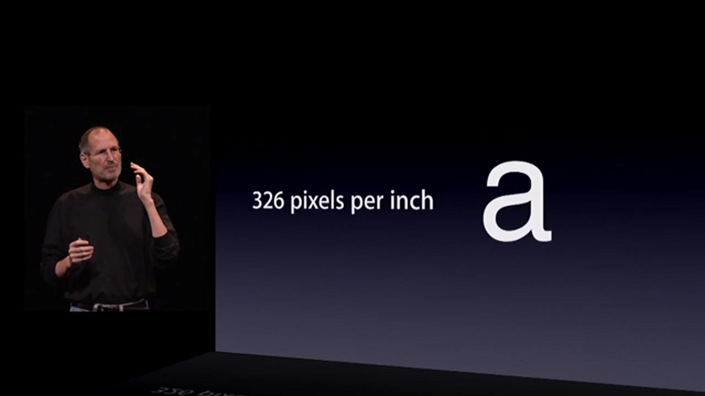
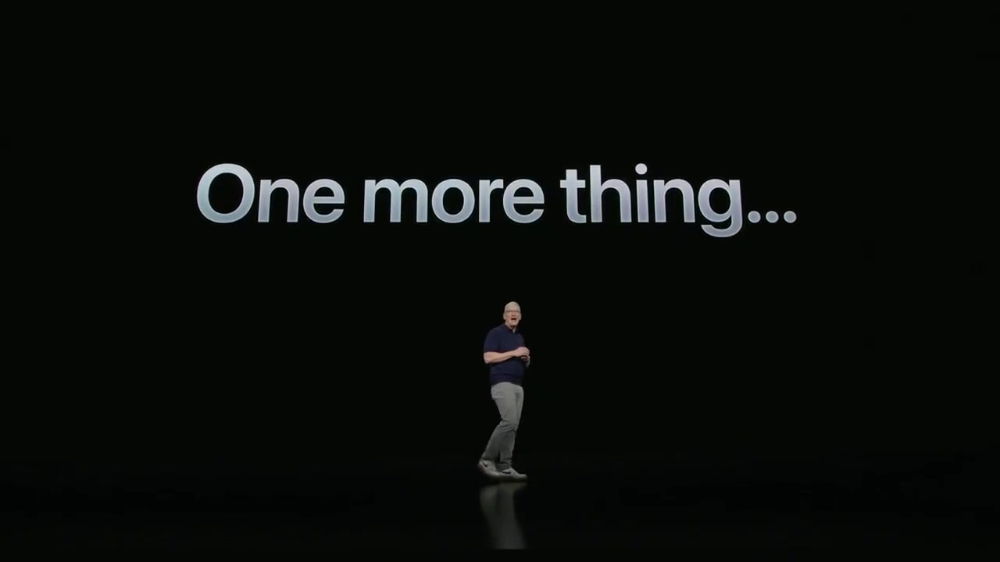
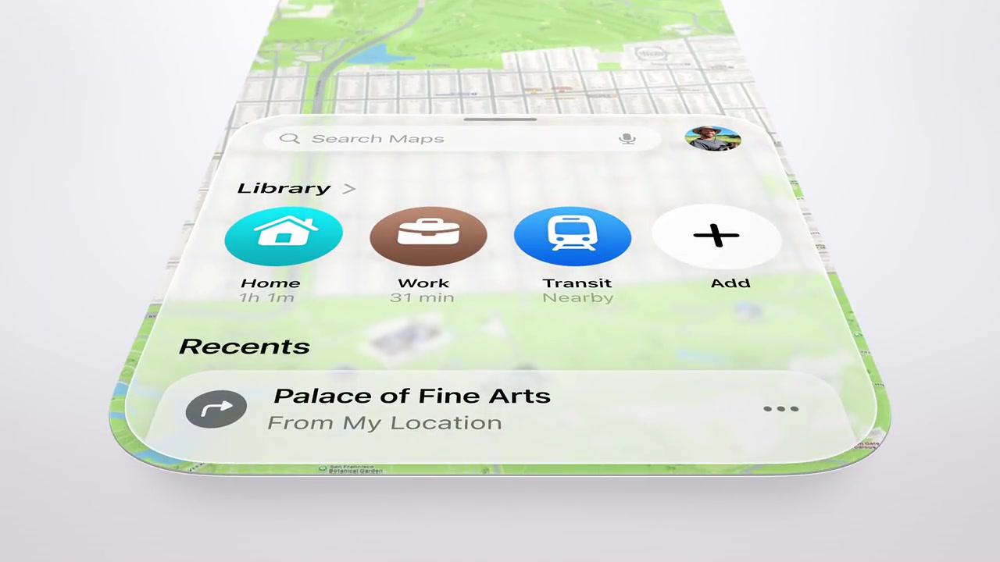

FINN / REFERENCE RESEARCH / 16 OCTOBER 2026
How Apple makes a product understandable, desirable and memorable.
A study of WWDC presentation craft: story, slides, typography, imagery, film, demonstrations, motion and sound. Prepared as research for a future Finn presentation.
1. The central finding
The recurring technique is controlled attention. A presenter establishes a question; a slide isolates the answer; an animation reveals a relationship; a demonstration makes the benefit concrete. Large type and elegant product imagery contribute, but their usefulness depends on the order of the argument. The strongest reference for Finn is the move from a recognizable human situation to visible product evidence.
Apple also uses several distinct presentation modes. A live stage reveal, a design interview, a filmed use case and a product trailer solve different problems. Combining their surface treatments indiscriminately would lose the clarity that makes each effective. A Finn demo needs understandable behavior and credible evidence before it needs cinematic spectacle.
This is qualitative presentation and category research, not a survey of audience preference, a ranking by views, or a commercial market-size study. “Iconic” means editorially selected landmark moments here; recent 2025–26 material is included as a current comparison, not evidence of established historical fame.
2. Research method and limits
The corpus spans selected WWDC moments from 2010 and 2013, followed by every keynote year from 2019 through 2026. Apple’s keynote pages, timed captions, legacy Apple-hosted recordings, official Newsroom imagery and technical design sessions form the primary evidence. A separate source register preserves older archive leads and unavailable media. The library contains short local study excerpts, three timestamped stills per case, official press assets and two complete technical-session slide PDFs.
Timed captions located the announcements. Three sampled frames per excerpt were visually inspected to verify the subject and distinguish stage footage from films. The entire duration of every keynote was not watched. Visual sequences support observations about staging and progression; they do not establish exact animation curves, production software, lens choices, font metrics, audience effectiveness or internal creative intent. Speech and sound analysis below identifies functions to study in the playable clips rather than claiming a full audio mix audit.
Times refer to the linked source recording, not a universal event clock. Other uploads may have different opening offsets. Local video is a compressed study derivative, generally 720 pixels high; it is not a mastering asset. Apple’s 2010/2013 legacy recordings are reached through existing public HTTP media links. Some older developer URLs returned pages without playable keynote media; those are explicitly marked in the catalog.
Technical-session slides are useful evidence of Apple’s design communication, but are not interchangeable with headline keynote slides. Official press photos are separately labelled; a photograph of Tim Cook at a viewing event does not prove the filmed keynote used that camera angle.
Visual evidence at a glance



Captured frames; source and timestamp details are in the gallery. Different production modes serve different narrative jobs.
3. Presentation eras and what changed
| Era / examples | Observed presentation grammar | Useful lesson |
|---|---|---|
| Live stage: iPhone 4 (2010), Mac Pro (2013), SwiftUI (2019) | Presenter, projected image and audience reaction share the event. Wide shots establish scale; tighter shots return attention to the speaker or one claim. | A simple visual must work at a distance and leave the speaker something useful to say. |
| Design manifesto: Intention and iOS 7 (2013) | Abstract geometry, short language, a design voice and isolated objects explain a philosophy before detailed features. | Motion can embody an idea, but the idea needs to be expressible plainly. |
| Filmed presentation: Big Sur / Apple silicon (2020), Universal Control (2021) | Edited locations and close product coverage replace many stage constraints. A relationship can be demonstrated directly on devices. | Plan an edit around comprehension rather than reproducing a conference stage. |
| Cinematic category reveal: Vision Pro (2023) | A verbal reset precedes product-detail footage; use-case scenes then explain an unfamiliar category. | Mystery needs a quick payoff and a concrete answer to “what would I do with it?” |
| System identity and behavior: Apple Intelligence (2024), Liquid Glass (2025), 2026 intelligence examples | Names, material behavior, interface close-ups and contextual demonstrations organize a complex software story. | Show what changes for the person using the software, not only its identity. |
These are overlapping modes, not clean historical boundaries. Live audiences, prerecorded films and stage imagery coexist in the same event.
4. Narrative: the reveal is a sequence, not a slide
Establish a frame. Apple silicon is introduced through the Mac’s earlier platform changes. The visual history makes a substantial engineering decision legible. SwiftUI gives a new approach a name before expanding its implications. These are different openings, but both provide an organizing idea before detail.
Make one promise perceptible. Retina’s pixel-density explanation pairs a number with a large letterform. Vision Pro’s first film exposes edges and components before showing the worn object. Universal Control is strongest when a pointer or object moves across device boundaries: the continuity itself supplies the explanation. A promise becomes easier to remember when the audience can point to the thing that proves it.
Alternate explanation and evidence. A name-only reveal creates attention; a use case spends that attention productively. Apple Intelligence’s identity beat would be thin without the subsequent examples and privacy explanation. A future Finn presentation should similarly distinguish a positioning statement from evidence that the implementation can support it.
Make the ending actionable. Price, availability and supported context answer practical questions after desire is established. The 2019 pricing sequence is also a caution: presenting a price clearly does not demonstrate value. The visual observation alone cannot establish audience sentiment; it does show how a separate accessory price becomes a highly exposed narrative beat.
Avoid a false origin story. The original iPhone introduction was Macworld 2007, not WWDC. Keep it as an adjacent presentation reference. The MacBook Air envelope reveal was also a different event, not a WWDC moment. The source register keeps Macworld separate rather than silently mixing it into the WWDC corpus.
5. Slide taxonomy
| Slide / visual type | Job | Reference and caution |
|---|---|---|
| Single name or phrase | Reset attention; introduce a category or section. | Vision Pro pre-reveal, Apple Intelligence identity. Keep the spoken sentence complementary rather than reading a paragraph. |
| One number | Make a technical or commercial fact memorable. | Retina density, Mac Pro pricing. Explain unit, baseline and scope; a huge unsupported number is still unsupported. |
| Hero product | Establish form, identity or desirability. | Mac Pro, MacBook Air, Vision Pro. A beautiful enclosure shot is not a substitute for a software benefit. |
| Interface close-up | Show one change the audience should notice. | Siri screen edge, Liquid Glass controls. Crop around the task without hiding information needed to understand it. |
| Comparison | Make a difference easy to see. | Design evolution, Retina explanation. Keep scale, input and conditions comparable. |
| Simple system diagram | Explain a relationship invisible in the interface. | Private Cloud Compute. Build the relationship progressively; include the limits of what the diagram represents. |
| Human context | Explain why the capability matters. | FaceTime film, Vision Pro use case, Workout Buddy. An edited illustration should be labelled differently from a live demonstration. |
| Overview / grouped recap | Organize breadth after the audience understands the main idea. | Official cross-device software imagery. A grid is useful for recap; it is harder to use as an initial explanation. |
The visual language is broader than “black background, white text.” The references include white design films, black stage graphics, colorful identity reveals, photographic rooms, device composites and live footage. Consistency comes from hierarchy and purpose rather than a single background color.
6. Typography: verified evidence versus visual inference
Verified: font resources in Apple’s official 2018 Presenting Design Work PDF include SFHello Regular, Medium and Semibold, with Lucida Grande and Apple Color Emoji also present. Designing Fluid Interfaces includes SFHello Light, Regular, Medium, Semibold, Bold and Italic, plus SFMono Regular. These are embedded resource names, with PDF subset prefixes removed for readability. The accompanying font-evidence catalog preserves the extracted names and page counts.
Not established: those files do not prove that every keynote used SF Hello, that SF Pro and SF Hello are interchangeable, or that a raster screenshot reveals an exact font or point size. Older and newer events should not be flattened into one assumed typography specification. No font binaries have been extracted into the library.
What can be studied visually is the hierarchy: a dominant short statement; a much smaller supporting label when needed; generous space; deliberate line breaks; limited simultaneous text; and consistent weight relationships within a sequence. The Retina example uses the letterform as explanatory content rather than ornamental type. The pricing example makes the currency figure the visual anchor.
For Finn, a later prototype can use a legally available typeface with a strong family of weights, then be tested in the actual presentation room. Choosing a typeface is separate from obtaining permission to distribute it or use it in public presentation materials. Apple’s font page and accompanying license are the source for its public font offerings; do not assume a UI mockup license automatically covers an unrelated slide deck. Exact deck typography should be decided after format, venue and rights are clear.
7. Composition, image quality and screenshot craft
Scale establishes hierarchy. In the 2023 pre-reveal, a small presenter stands against an enormous phrase. The contrast gives the words event-like importance. In device demonstrations, the opposite happens: the interface becomes large enough to read. Shot size is part of the explanation.
Negative space protects the subject. Hardware films separate the object from clutter; software examples reduce competing content. Empty space is functional when it helps a viewer find the first thing to look at. It should not turn into an excuse to omit evidence.
Devices supply orientation. A complete device silhouette tells viewers where an interaction takes place. A subsequent crop makes the control readable. Jumping immediately to an abstract enlarged interface can erase context. Showing an entire phone throughout can make the useful detail too small. A wide-to-detail progression solves both problems.
Content is designed along with the frame. Photo libraries, messages and activity screens communicate through the data inside them. For Finn, later captures should use an internally consistent workout, readable values and believable progression. Real implemented states must be distinguished from concept visuals, especially while the app is still being built. Remove personal information through appropriate sample accounts or consent, not by covering the very behavior the audience needs to understand.
Preserve provenance. The stills folder contains frames captured from recordings. The press-photos folder contains Newsroom files, including device composites and event photography. Alternative crops and visually similar Newsroom files can remain; their original URLs are preserved. Neither category should be silently described as an original slide export.
8. Motion grammar
| Motion technique | What it communicates | Study reference |
|---|---|---|
| Progressive disclosure | One new concept appears when it becomes relevant. | SwiftUI and Private Cloud Compute explanations. |
| Object continuity | The audience tracks identity across a change of place or state. | Universal Control and the 2013 Intention geometry. |
| Detail-to-whole reveal | Suspense resolves into recognition. | Vision Pro and Mac Pro product footage. |
| Wide-to-detail camera move / edit | Context precedes inspection. | MacBook Air and spatial-use footage. |
| Material response | A surface behaves like a coherent material rather than a flat overlay. | Liquid Glass introduction and interface examples. |
| State feedback | The audience sees that an action is being received or processed. | Siri full keynote context; the local sample focuses on identity and explanation. |
| Scene change | A section gains a new context, energy or speaker. | Filmed keynotes and opening films. |
These are observed functions, not confirmed internal tool settings. A match across two frames does not prove Magic Move was used. Apple’s Keynote documentation describes action builds and Magic Move as available techniques; recreating a similar result can be practical, but production method and visual result are separate claims.
For a later Finn motion study, begin with a still that reads correctly, then animate only the change the audience needs to understand. A useful experimental starting point is 0.25–0.5 seconds for a simple element change, 0.6–1.2 seconds for a deliberate reframing, and a pause long enough to read the result. These are proposed test ranges, not measurements or official Apple prescriptions. The actual result should be rehearsed against the spoken delivery and the room’s viewing distance.
In an interactive or automatically playing version, provide controls and a reduced-motion alternative. The original films can be studied at their intended pacing while the final Finn presentation remains accessible and under the presenter’s control.
9. Films, trailers and demonstrations are different evidence
Opening film: establish tone or emotional stakes. Intention uses geometry and language; the 2023 opening tells a developer-centered story; the 2024 skydiving sequence uses surprise and humor. None is primarily a feature tutorial. Their production scale is not a necessary benchmark for a small team.
Product trailer: control light, viewpoint, cut and reveal. MacBook Air and Vision Pro are useful studies of physical form. A trailer can make an object desirable before explaining its use; it cannot establish reliability in everyday operation.
Design interview: add an authoritative human voice and articulate intent. The selected iOS 7 and Big Sur excerpts contain this mode. The camera’s restraint lets the explanation carry the scene. These should not be mislabelled as uninterrupted interface demonstration.
Contextual use film: make a benefit imaginable in a room or a relationship. The FaceTime sample moves from stage presentation into family-use footage. The Vision Pro example makes a spatial interface intelligible through familiar photos and a recognizable room.
Product demonstration: show a state, action and outcome clearly enough to follow. Universal Control is a strong reference because the same pointer or content bridges the devices. An edited filmed demonstration can prove what is shown on screen; it does not automatically prove that the event was live or that the product never fails.
For Finn’s future materials, keep three labels available: working implementation, recorded demonstration, and concept illustration. A recorded fallback can make delivery dependable, while an explicit label preserves trust. A trailer and a technical proof can coexist if their roles are clear.
10. Sound, speaker and pacing
Speech provides the causal connection that a short slide intentionally omits. A reveal phrase benefits from space before and after it. A demo needs enough quiet for the audience to notice the action and its response. Workout Buddy is especially relevant because spoken output is part of the product: a still screenshot cannot communicate the experience by itself.
In the local clips, study the handoff between presenter speech, filmed narration, product audio and music. Note when the presenter stops speaking to let the product speak. Exact music cue sheets, loudness levels and stem mixes were not available and are not inferred here. Music should not be treated as a reusable asset merely because it appears in a reference film.
The live-stage references also expose a constraint absent from a pure slide deck: the speaker must remain visible without competing with the screen. The filmed references can change location or cut to a close-up. A later Finn deck should be designed for its actual delivery format: live room, recorded pitch or both. A theatrical wide frame may be effective on a keynote stream and unreadable in a small embedded video window.
11. Category relevance: Apple fitness and Finn
WWDC25’s Workout Buddy is the most direct category reference in this sample. It positions spoken encouragement within an ongoing workout and personal activity context. The useful competitive question is what kind of assistance the person receives, when it arrives, and what evidence makes that assistance credible. It should not be reduced to a superficial comparison of gradient colors or device frames.
Finn’s intended camera-led observation and coaching story calls for a different proof: what is observed, which visible event triggers feedback, how the person understands it and what limitations remain. Research into Apple’s presentation style does not validate Finn’s measurement accuracy or clinical benefit. Those claims would require their own evidence.
For the future presentation, strong candidate research directions are a single understandable exercise sequence, a readable observation on screen, the moment feedback appears, and a clear outcome the current build can actually show. Any accuracy figure, privacy claim, compatibility statement or improvement claim must be grounded in the implementation and validation available at that time.
Apple’s advantage is not only visual polish: its presentations can draw on a familiar ecosystem and established hardware. Finn may need more explicit explanation of setup and trust. Borrowing the discipline of demonstration is more useful than borrowing an assumption that the audience already understands the product.
12. Priorities for later production
| Priority | Reference lesson | Future Finn material to investigate |
|---|---|---|
| Highest | Universal Control: relationship made visible. | One continuous task with clear input, observation, feedback and result. |
| Highest | Retina: make a claim perceptible. | Evidence that can be understood visually, with units and honest scope. |
| High | FaceTime / Vision use case: human meaning. | A recognizable workout situation and a specific moment of help. |
| High | Presenting Design Work: clear objective and audience. | A defined audience question and an answer the current build can support. |
| Medium | Intention: motion follows an idea. | A small original motion motif grounded in Finn’s identity. |
| Medium | Apple silicon: frame change through a coherent story. | A concise explanation of why the product needs to exist. |
| Optional | Hardware reveal films. | A short app or product identity moment once the demonstration is clear. |
This research does not prescribe a finished slide order or create a pitch. It establishes a visual and analytical reference base. The later deck should be shaped around its audience, time allowance and implementation state.
13. Assets, rights and practical reuse
The library preserves source links, event identity, timestamps, file hashes and editorial notes. It contains study copies of Apple-owned material. It does not grant permission to reuse keynote footage, music, photographs, logos, fonts or product artwork in a public Finn presentation. Keep these references as internal inspiration unless appropriate rights or another applicable basis for use has been established.
For eventual public materials, create original app captures, original or licensed footage and music, and use approved device artwork only under its actual terms. Apple’s App Store marketing guidelines are distinct from general access to Newsroom files. A downloadable image is not automatically an unrestricted marketing asset.
The provenance catalog also makes the library maintainable: an unavailable link can be replaced without losing the distinction between an Apple-hosted original, an archive mirror, a captured frame and a press image.
14. Supporting sources and further viewing
The gallery provides source links and timestamps for every case. Additional sources below anchor the research and document historical gaps.
- Presenting Design Work, WWDC18 — local 104-page PDF; objectives, audience, relatability, evidence and narrative. Useful page ranges: 14–18, 44–56, 61–64, 80–94, 99–101.
- Designing Fluid Interfaces, WWDC18 — local 281-page PDF; supporting material on interaction and motion, distinct from keynote production.
- The details of UI typography, WWDC20 — interface type guidance, not a universal keynote-font specification.
- Meet Liquid Glass, WWDC25 — supporting explanation of the material and design system.
- Intention creative account, Simon Cassels — first-person creative attribution and context; not an Apple production manual.
- Keynote action builds — documented authoring capabilities; not proof of how a particular broadcast was made.
- WWDC05 Intel transition announcement — historical context; archive recording lead in source register, not a locally reviewed case.
- WWDC14 SDK and Swift announcement — important historical context. A working official legacy keynote download was not obtained; no local Swift14 clip is claimed.
- Original iPhone announcement, Macworld07 — adjacent reference, explicitly outside WWDC.
- watchOS26 / Workout Buddy announcement — category positioning and official feature description.
All sources accessed during this research on 16 October 2026. Asset-specific Newsroom and keynote links appear in the gallery and catalogs.